☑️ パワーエレクトロニクス（ 3 ） 演習問題 解答・解説
🗒️ 第3回は「パワー半導体がオンのとき、中で何が起きているか」と「ワイドギャップ半導体がなぜ効くのか」を確かめる問題です。問題1で5つの素子の構造・バンド・制御を整理し、問題2で空乏層を解いて $F_\mathrm{max} = 2V/d$ を導きます。問題3はその式を使って、同じ $300\,[\mathrm{V}]$ 耐圧の Si と GaN でオン抵抗がどれだけ違うかを数値で出します。問題4は問題1で描いたバンド図を使って、MOSFET と IGBT のオン電圧の形の違い（障壁 $V_0$ の有無と伝導度変調）と導通損失を比べます。
問題3の数値はスライド（p.38「約10倍」、p.39「100倍」）とは違う値になります。問題文で与えた数値（Si $0.3$、GaN $3.3\,[\mathrm{MV/cm}]$）で有効数字2桁で答えさせるので、正解は $11$ 倍です。
問題1：スイッチの構造と特徴
下記の図(a)から(e)は、パワーエレクトロニクスで用いられる半導体スイッチである。それぞれについて下記の項目をまとめよ。
- 名称・回路記号
- オン時（電流が流れている時）のエネルギーバンドと各端子のバイアス
- オン・オフの制御方法
- 特徴（ネットや教科書で調べる）

(2)の各端子のバイアスは、下記の回路素子を接続すること。

エネルギーバンドとバイアスの書き方は講義スライドを参考にすること。
名称・回路記号
層の並びと端子の位置から読み取ります。回路記号は表の「回路記号」の列のとおりです（第3回スライド p.3 と同じ描き方）。
| 図 | 名称 | 回路記号 | 端子 |
|---|---|---|---|
| (a) | （pn）ダイオード | 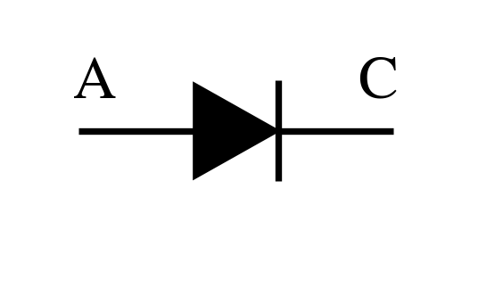 | A（アノード）・C（カソード） |
| (b) | npn 形バイポーラトランジスタ（BJT） | 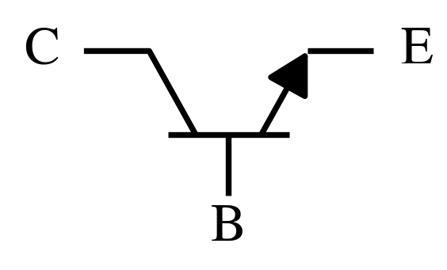 | E（エミッタ）・B（ベース）・C（コレクタ） |
| (c) | n チャネル MOSFET | 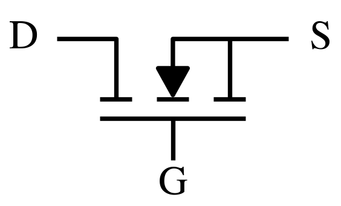 | S（ソース）・G（ゲート）・D（ドレイン） |
| (d) | IGBT（絶縁ゲートバイポーラトランジスタ） | 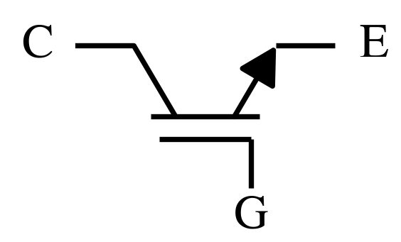 | E（エミッタ）・G（ゲート）・C（コレクタ） |
| (e) | サイリスタ | 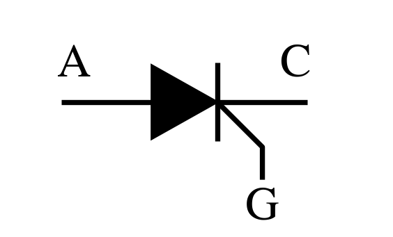 | A（アノード）・G（ゲート）・C（カソード） |
オン時（電流が流れている時）のエネルギーバンドと各端子のバイアス
バイアス素子は、左＝上が＋の電池、中＝上が−の電池、右＝接地です。オン時には中央の「上が−の電池」はどこにも使いません。
| 図 | オン時のバイアス | バンド図のポイント（スライド） |
|---|---|---|
| (a) | C を接地、A に＋の電池（順バイアス） | 障壁が $e(V_d - V)$ に下がり、電子と正孔が越えて流れる（第2回 p.40） |
| (b) | E を接地、B に＋（E–B 順バイアス）、C に＋（B–C 逆バイアス） | E から注入された電子が薄い p 層を通り抜け、B–C の坂を下って C へ（第3回 p.11〜13） |
| (c) | S を接地、D に＋、G に＋ | ゲート方向：p 層の表面のバンドが下に曲がり反転層ができる（p.17）。S–D 方向：反転層で n–n–n がつながり障壁が無くなる（p.18） |
| (d) | E を接地、C に＋、G に＋（p 層の上の端子は接地） | ゲートで反転層ができて電子が n 層へ、コレクタ側の p から正孔が注入される（p.25〜27） |
| (e) | C を接地、A に＋、G に＋（ゲート電流を注入） | ゲート電流をきっかけに pnp と npn が互いにベース電流を供給しあい、オンのまま保たれる（p.31〜33） |
表のバイアスでつないだときのオン時のバンドを下に描きます。左右の並びは問題の図 (a)〜(e) と同じです。電池は問題の「上が＋の電池」（長い線が＋）、ゲートの電池はゲート電極につながっていて、ゲート電極は絶縁体で半導体と隔てられています。バンドの高さは模式的なもので、端子のつながった層の $E_F$（破線）の差が、かけた電圧のぶんです。●は電子、○は正孔、⊕はドナーイオン、⊖はアクセプタイオン、青の矢印はキャリアの動きです。
灰色の帯が空乏層です。空乏層には動けないイオン（n 側に ⊕、p 側に ⊖）だけが残っていて（帯の中の細い点線が n と p の境目で、上端の n・p の文字がそれぞれの側）、このイオンの電荷でバンドが曲がります（第2回の問題1と同じ）。順バイアスの接合では障壁が下がって空乏層が薄くなり、逆バイアスの接合では厚くなります。空乏層の外（中性の部分）は、イオンと多数キャリアが同じ数です。MOSFET（c）は、n–p–n の障壁（p 層の山）はそのままで、ゲート直下の表面だけにゲートの＋で電子が集まった反転層の通り道（青の帯）ができ、電子は山を越えずにそこを通って S から D へ流れます。IGBT（d）はゲート直下の表面に沿って描いたので、反転層（電子が多数）で E 側の n とその先の n 層がつながり、そこには空乏層ができません。
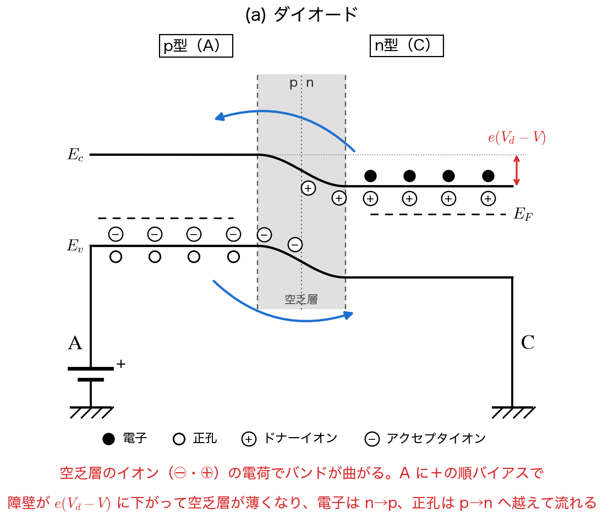
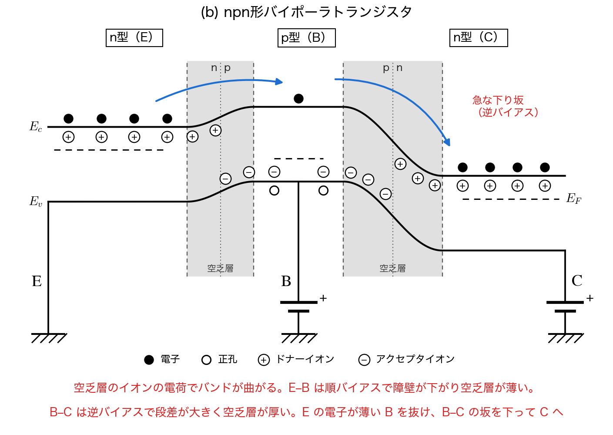
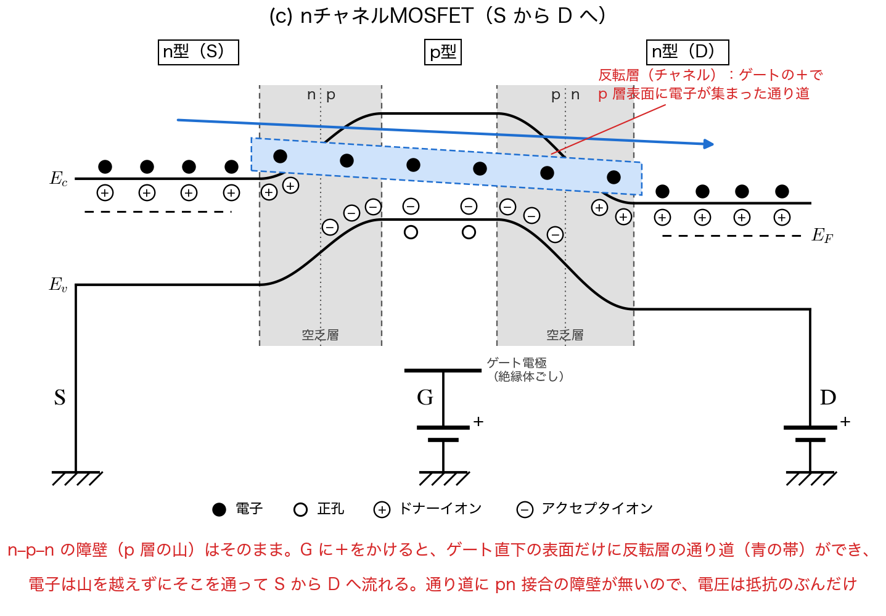
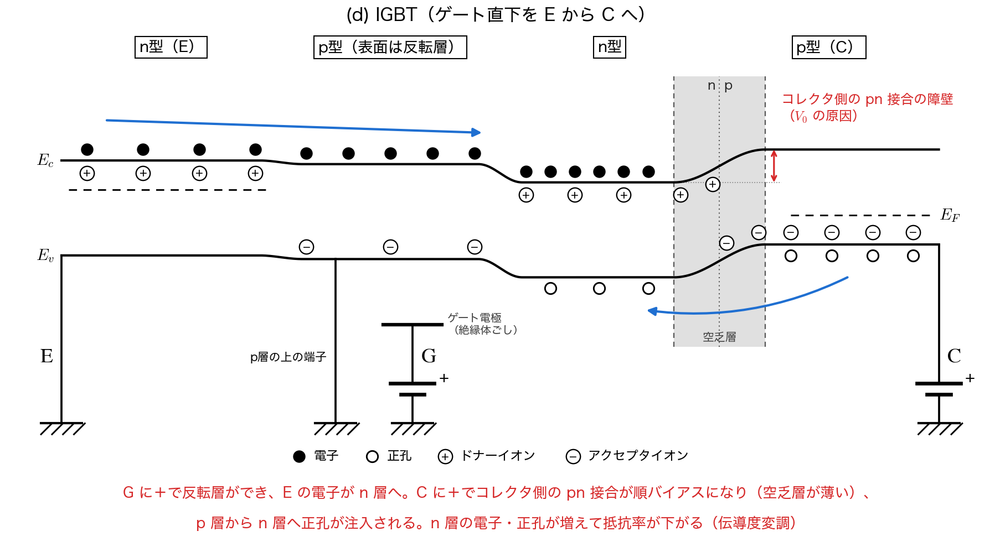
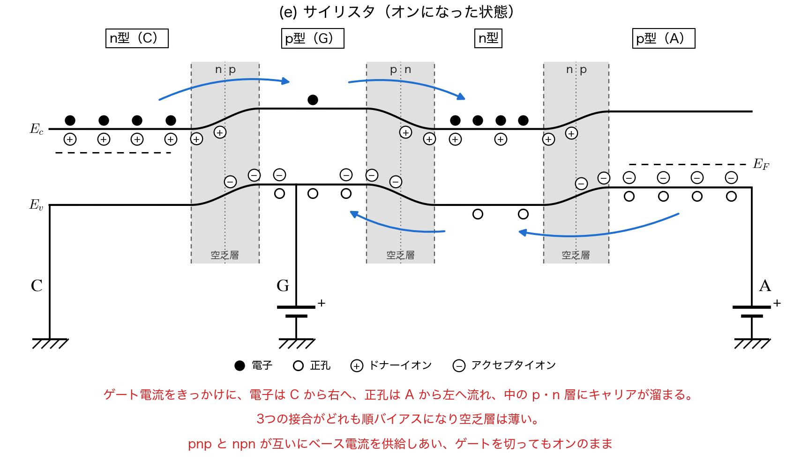
オン・オフの制御方法
- (a) ダイオード：制御端子が無い。かかる電圧の向きで切り替わる（順電圧でオン、逆電圧でオフ。スライド p.7）。
- (b) BJT：ベース電流で制御する（電流駆動。p.13・14・21）。
- (c) MOSFET：ゲート電圧で制御する（電圧駆動。p.17・21）。
- (d) IGBT：ゲート電圧で制御する（電圧駆動。p.26）。
- (e) サイリスタ：ゲート電流でオンにできるが、ゲートを切ってもオンのまま（ラッチ。p.33・34）。オフにするには、アノード電流を保持電流より小さくする（逆電圧をかける）。
特徴（ネットや教科書で調べる）
調べものなので、下のような観点が入っていればよいです。
- (a) ダイオード：オン時に約 $0.7\,[\mathrm{V}]$ 残る（p.9）。整流・還流に使う。
- (b) BJT：pn 障壁ぶんの電圧が残る（p.14）。ベース電流が大きく、スイッチング時の損失が増える。現在のパワエレではあまり使われない。
- (c) MOSFET：電流の通り道に pn 障壁が無く、オン電圧が小さい（p.20）。電圧駆動で高速、高周波向き（p.21）。スイッチング電源など。
- (d) IGBT：大電流を流せるが、オン電圧が大きい（p.28）。中〜大容量のインバータ（電車・EV など）。
- (e) サイリスタ：大電力向き。自分でオフにできないので、交流の位相制御や超大容量（直流送電など）に使う。
問題2：空乏層の解析
左が n 型、右が p 型で $x=0$ で接合した pn 接合の空乏層（$-x_n \le x \le x_p$）を、ポアソン方程式から導いた $\dfrac{dF_x(x)}{dx} = \dfrac{q(x)}{\varepsilon}$（式(1)）で解析する。電荷密度は $-x_n \le x \le 0$ で $eN_d$、$0 \le x \le x_p$ で $-eN_a$ の階段状とする。

下記の(i)と(ii)の範囲の場合で空乏層内の電荷分布$q(x)$が階段状に変化する。それぞれの場合における式(1)を求めよ。
$({\rm i}): -x_{n}\leq x\leq 0$、$({\rm ii}): 0\leq x\leq x_{p}$
式(1)に、それぞれの範囲の電荷密度を入れるだけです。
$$({\rm i})\ \frac{dF_x}{dx} = \frac{eN_d}{\varepsilon}, \qquad ({\rm ii})\ \frac{dF_x}{dx} = -\frac{eN_a}{\varepsilon}$$2-1 の微分方程式を不定積分して $F_x^{\rm (i)}(x), F_x^{\rm (ii)}(x)$ を求めよ。境界条件 $F_x^{\rm (i)}(-x_n)=0$、$F_x^{\rm (ii)}(x_p)=0$ で積分定数を決め、$-x_n \le x \le x_p$ の電場をグラフに描け。さらに $x=0$ での連続条件 $F_x^{\rm (i)}(0)=F_x^{\rm (ii)}(0)$ から、$x_n, x_p, N_d, N_a$ の関係を求めよ。
不定積分すると
$$F_x^{\rm (i)}(x) = \frac{eN_d}{\varepsilon}x + C_1, \qquad F_x^{\rm (ii)}(x) = -\frac{eN_a}{\varepsilon}x + C_2$$境界条件から $C_1 = \dfrac{eN_d}{\varepsilon}x_n$、$C_2 = \dfrac{eN_a}{\varepsilon}x_p$ なので、
$$F_x^{\rm (i)}(x) = \frac{eN_d}{\varepsilon}(x + x_n), \qquad F_x^{\rm (ii)}(x) = \frac{eN_a}{\varepsilon}(x_p - x)$$グラフは $x = 0$ を頂点とする三角形です（値は正。n 側が＋、p 側が−に帯電しているので、電場は $+x$ 向き）。
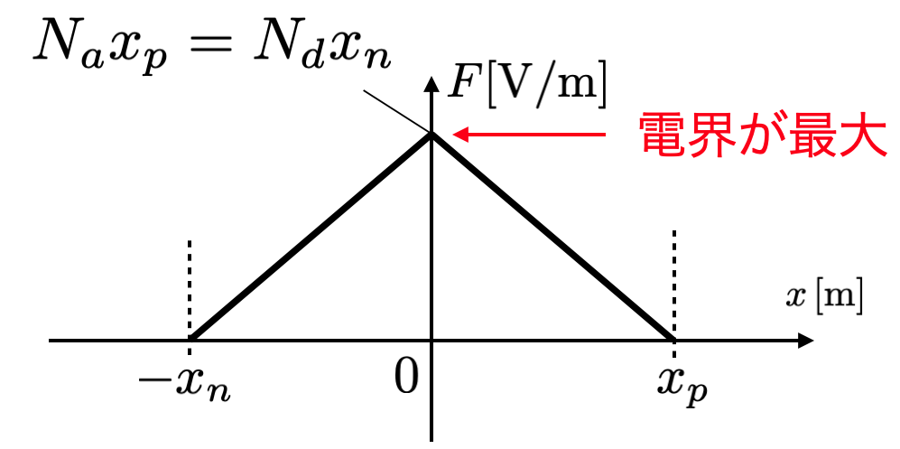
$x = 0$ で等しいとおくと $\dfrac{eN_d}{\varepsilon}x_n = \dfrac{eN_a}{\varepsilon}x_p$ より
$$N_d x_n = N_a x_p$$n 側と p 側で、空乏層に残ったイオンの電荷の量が等しい、という意味です。
$V_{d}=\int_{-x_{n}}^{x_{p}}F_{x}(x)\,dx$ を用いて、$x_{n}$、$x_{p}$、空乏層幅 $d = x_n + x_p$ を $e,\varepsilon,N_{d},N_{a},V_{d}$ を用いて表せ。
積分は三角形の面積です。頂点の高さは $F_x(0) = \dfrac{eN_d}{\varepsilon}x_n$ なので、
$$V_d = \frac{1}{2}(x_n + x_p)\frac{eN_d}{\varepsilon}x_n$$$x_p = \dfrac{N_d}{N_a}x_n$ を入れると $V_d = \dfrac{eN_d(N_a + N_d)}{2\varepsilon N_a}x_n^2$ なので、
$$x_n = \sqrt{\frac{2\varepsilon V_d N_a}{eN_d(N_a + N_d)}}, \qquad x_p = \sqrt{\frac{2\varepsilon V_d N_d}{eN_a(N_a + N_d)}}$$ $$d = x_n + x_p = \sqrt{\frac{2\varepsilon V_d (N_a + N_d)}{eN_aN_d}} = \sqrt{\frac{2\varepsilon V_d}{e}\left(\frac{1}{N_a} + \frac{1}{N_d}\right)}$$空乏層内の電場が最大になる位置を答え、その最大値$F_{\rm max}$を$e,\varepsilon,N_{d},N_{a},V$を用いて表せ。さらに、$F_{\rm max}$と空乏層幅$d$の間に、$F_{\rm max}=2V/d$ の関係が成り立つことを示せ。
最大は三角形の頂点 $x = 0$ です。2-3 の $x_n$（$V_d$ を $V$ に置き換え）を入れて
$$F_\mathrm{max} = \frac{eN_d}{\varepsilon}x_n = \sqrt{\frac{2eVN_aN_d}{\varepsilon(N_a + N_d)}}$$$V$ は三角形の面積なので $V = \dfrac{1}{2}F_\mathrm{max}\,d$、よって $F_\mathrm{max} = \dfrac{2V}{d}$。式で確かめるなら、$F_\mathrm{max}\,d = \sqrt{\dfrac{2eVN_aN_d}{\varepsilon(N_a+N_d)}\cdot\dfrac{2\varepsilon V(N_a+N_d)}{eN_aN_d}} = 2V$ です。
問題3：ワイドギャップ半導体
問題２で導いた $F_{\rm max}=2V/d$ を使う。$F_{\rm max}$が材料で決まる絶縁破壊電界強度を超えると、素子は壊れてしまう。$V$を半導体素子にかけられる電圧とみなす。Siの絶縁破壊電界強度を$0.3\, {\rm [MV/cm]}$、GaNの絶縁破壊電界強度を$3.3\, {\rm [MV/cm]}$とする。数値は、この問題で与えた値を使って計算し、有効数字2桁で答えること。
同じ空乏層幅$d$で、GaNにはSiの何倍の電圧$V$をかけられるか求めよ。
$V = F_\mathrm{max}\,d/2$ で $d$ が同じなので、電圧の比は絶縁破壊電界強度の比です。
$$\frac{V_\mathrm{GaN}}{V_\mathrm{Si}} = \frac{3.3}{0.3} = 11$$$300\,{\rm [V]}$に耐える素子を設計する。$N_{a}=N_{d}=N$とし、$F_{\rm max}$が絶縁破壊電界強度にちょうど等しくなるようにする。SiとGaNのそれぞれについて、空乏層幅$d\,{\rm [\mu m]}$とドーピング濃度$N\,{\rm [cm^{-3}]}$を求めよ。比誘電率はSiが$11.8$、GaNが$9.5$とし（講義スライドの表）、$\varepsilon_{0}=8.85\times10^{-12}\,{\rm [F/m]}$、$e=1.60\times10^{-19}\,{\rm [C]}$とする。
厚さは $F_\mathrm{max} = 2V/d$ から $d = 2V/F_\mathrm{max}$。濃度は、2-3 の $d$ で $N_a = N_d = N$ とおくと $d = \sqrt{4\varepsilon V/(eN)}$ なので、$d = 2V/F_\mathrm{max}$ と合わせて
$$N = \frac{\varepsilon F_\mathrm{max}^2}{eV}$$単位をそろえて（$0.3\,[\mathrm{MV/cm}] = 3\times10^{7}\,[\mathrm{V/m}]$、$3.3\,[\mathrm{MV/cm}] = 3.3\times10^{8}\,[\mathrm{V/m}]$）計算します。
Si：
$$d = \frac{2\times300}{3\times10^{7}} = 2.0\times10^{-5}\,[\mathrm{m}] = 20\,[\mu\mathrm{m}]$$ $$N = \frac{11.8\times8.85\times10^{-12}\times(3\times10^{7})^2}{1.60\times10^{-19}\times300} = 1.96\times10^{21}\,[\mathrm{m^{-3}}] \approx 2.0\times10^{15}\,[\mathrm{cm^{-3}}]$$GaN：
$$d = \frac{2\times300}{3.3\times10^{8}} = 1.82\times10^{-6}\,[\mathrm{m}] \approx 1.8\,[\mu\mathrm{m}]$$ $$N = \frac{9.5\times8.85\times10^{-12}\times(3.3\times10^{8})^2}{1.60\times10^{-19}\times300} = 1.91\times10^{23}\,[\mathrm{m^{-3}}] \approx 1.9\times10^{17}\,[\mathrm{cm^{-3}}]$$GaN は Si の約 $1/11$ の厚さで、約 $97$ 倍の濃度にできます（誘電率を同じとみなせば $11^2 = 121$ 倍。比誘電率の違い $9.5/11.8$ のぶん小さくなる）。Si の値は 300 V 級のドリフト層（$10^{14}$〜$10^{15}\,[\mathrm{cm^{-3}}]$ 台、厚さ 20 µm 前後）として現実的な値です。
オン時、電流は(2)の厚さ$d$、濃度$N$のn型の層を流れるとし、その層の抵抗$R=\rho d/S$をオン抵抗とみなす。ここで、抵抗率は$\rho=1/(eN\mu_{n})$、断面積は$S=1\,{\rm [cm^{2}]}$とする。電子移動度$\mu_{n}$はSiが$1400\,{\rm [cm^{2}/(V\cdot s)]}$、GaNが$900\,{\rm [cm^{2}/(V\cdot s)]}$とする。SiとGaNの$R\,{\rm [\Omega]}$を求め、GaNの$R$はSiの何分の1か答えよ。
cm 単位のまま計算すると楽です。まず抵抗率：
$$\rho_\mathrm{Si} = \frac{1}{1.60\times10^{-19}\times1.96\times10^{15}\times1400} = 2.28\,[\Omega\cdot\mathrm{cm}]$$ $$\rho_\mathrm{GaN} = \frac{1}{1.60\times10^{-19}\times1.91\times10^{17}\times900} = 3.64\times10^{-2}\,[\Omega\cdot\mathrm{cm}]$$厚さ（$20\,[\mu\mathrm{m}] = 2.0\times10^{-3}\,[\mathrm{cm}]$、$1.82\,[\mu\mathrm{m}] = 1.82\times10^{-4}\,[\mathrm{cm}]$）をかけて $S = 1\,[\mathrm{cm^2}]$ で割ると、
$$R_\mathrm{Si} = 2.28\times2.0\times10^{-3} = 4.6\times10^{-3}\,[\Omega] = 4.6\,[\mathrm{m\Omega}]$$ $$R_\mathrm{GaN} = 3.64\times10^{-2}\times1.82\times10^{-4} = 6.6\times10^{-6}\,[\Omega] = 6.6\,[\mu\Omega]$$ $$\frac{R_\mathrm{Si}}{R_\mathrm{GaN}} \approx 690$$文字式にすると、$d = 2V/F_\mathrm{max}$、$eN = \varepsilon F_\mathrm{max}^2/V$ を入れて
$$R = \frac{d}{eN\mu_n S} = \frac{2V^2}{\varepsilon\,\mu_n\,F_\mathrm{max}^3\,S}$$となり、絶縁破壊電界強度の 3 乗が効きます。比で見ると、厚さ $1/11$ × 抵抗率 $1/63$（濃度 97 倍、移動度 $900/1400$）で約 $1/690$ です。
(3)の結果を、講義の「耐圧と損失のトレードオフ」（オフ時は濃度を小さく、オン時は濃度を大きくしたい）と結びつけて説明せよ。また、GaNの移動度はSiより小さいのに、なぜオン抵抗は小さくなるのか説明せよ。
Si では、耐圧を上げるために濃度を下げて空乏層を厚くすると、その層の抵抗率も厚さも大きくなり、オン抵抗（導通損失 $P = I^2R_\mathrm{on}$）が増えてしまいます。これがトレードオフです。絶縁破壊電界強度が約 10 倍の GaN では、同じ耐圧を、約 $1/10$ の厚さ・約 100 倍の濃度の層で受け持てます。オフ時の耐圧を保ったまま、オン時の抵抗を下げられるので、トレードオフが緩みます。
移動度は GaN の方が約 $1/1.6$ と不利ですが、オン抵抗に効くのは「厚さ（$1/11$）× 抵抗率（濃度 97 倍で $1/97$）」の両方で、合わせて約 1000 分の 1 の効果があります。移動度の不利（1.6 倍）はこれに比べて小さいので、オン抵抗は 2 桁以上小さくなります。
問題4：オン時の損失の比較
問題１(2)で描いた、(c) MOSFETと(d) IGBTのオン時のエネルギーバンド（電流の通り道に沿ったもの。MOSFETはSからD、IGBTはEからCへ向かう方向）を使って、2つの素子のオン時の損失を比べる。
オン時に素子で消費される電力を導通損失という。素子にかかる電圧を$V$、流れる電流を$I$とすると、導通損失は $P=VI$ で表される。オン時の電圧は、MOSFETとIGBTでそれぞれ下記のように表せるとする。
$$\begin{aligned}{\rm MOSFET} &: V_{\rm DS}=R_{\rm on}I\\{\rm IGBT} &: V_{\rm CE}=V_{0}+r_{\rm on}I\end{aligned}$$MOSFETの導通損失は$P=V_{\rm DS}I=I^{2}R_{\rm on}$となる。
問題１(2)で描いた(c)と(d)のエネルギーバンドを見比べて、電流の通り道にpn接合の障壁があるのはどちらの素子か答えよ。また、そのことを使って、MOSFETのオン時の電圧はチャネル（反転層）とn層の抵抗だけで$R_{\rm on}I$と表せるのに対し、IGBTのオン時の電圧には、電流によらない電圧$V_{0}$が加わる理由を説明せよ。
MOSFET（c）は、ゲート電圧で p 層の表面に反転層（n チャネル）ができ、S から D まで n–n–n とつながります。S–D 方向のバンドには電子が越える山が無く（スライド p.18、p.20「pn接合のエネルギー障壁がないので、オン電圧が小さい」）、電子は抵抗の中を流れるだけです。だから電圧は電流に比例し、$V_\mathrm{DS} = R_\mathrm{on}I$ と書けます。電流 0 なら電圧も 0 です。
IGBT（d）は、MOSFET の部分を通った電子が n 層に入ったあと、コレクタ側の p 層との pn 接合が電流の通り道に残っています（スライド p.27）。この接合はオン時に順バイアスになりますが、ダイオードと同じで、障壁を下げて正孔が流れ始めるまでにはある程度の電圧（ダイオードの約 $0.7\,[\mathrm{V}]$ と同じ程度）が要ります。この電圧は電流をいくら小さくしても消えないので、電流によらない $V_0$ としてオン電圧に加わります。その上に n 層などの抵抗ぶん $r_\mathrm{on}I$ が乗ります。
$600\,{\rm [V]}$用のMOSFETとIGBTがあり、MOSFETは$R_{\rm on}=60\,{\rm [m\Omega]}$、IGBTは$V_{0}=0.9\,{\rm [V]}$、$r_{\rm on}=15\,{\rm [m\Omega]}$とする。電流$10\,{\rm [A]}$と$40\,{\rm [A]}$を流したときの、それぞれの素子の導通損失を求めよ。また、2つの素子の導通損失が等しくなる電流を求め、それより小さい電流と大きい電流では、どちらの素子の損失が小さいか答えよ。
どちらも $P = VI$ です。MOSFET は $P = I^2R_\mathrm{on}$、IGBT は $P = (V_0 + r_\mathrm{on}I)I = V_0I + r_\mathrm{on}I^2$ になります。
$$10\,[\mathrm{A}]:\quad P_\mathrm{MOS} = 10^2\times0.06 = 6.0\,[\mathrm{W}],\qquad P_\mathrm{IGBT} = 0.9\times10 + 0.015\times10^2 = 9 + 1.5 = 10.5\,[\mathrm{W}]$$ $$40\,[\mathrm{A}]:\quad P_\mathrm{MOS} = 40^2\times0.06 = 96\,[\mathrm{W}],\qquad P_\mathrm{IGBT} = 0.9\times40 + 0.015\times40^2 = 36 + 24 = 60\,[\mathrm{W}]$$（オン電圧で見ると、MOSFET は $0.6\,[\mathrm{V}]$ → $2.4\,[\mathrm{V}]$、IGBT は $1.05\,[\mathrm{V}]$ → $1.5\,[\mathrm{V}]$。）損失が等しくなる電流は、
$$0.06\,I^2 = 0.9\,I + 0.015\,I^2 \quad\Rightarrow\quad 0.045\,I = 0.9 \quad\Rightarrow\quad I = 20\,[\mathrm{A}]$$$20\,[\mathrm{A}]$ より小さい電流では MOSFET、大きい電流では IGBT の方が損失が小さくなります。MOSFET の損失は $I^2$ で増えますが、IGBT は $V_0$ のぶん小電流で不利な代わりに、$I^2$ の係数が $1/4$ なので大電流で有利になります。
(2)では、IGBTの$r_{\rm on}$（$15\,{\rm [m\Omega]}$）が、同じ$600\,{\rm [V]}$用のMOSFETの$R_{\rm on}$（$60\,{\rm [m\Omega]}$）より小さい。この理由を、問題１(2)で描いた(d)のエネルギーバンド（コレクタ側のp層から、n層へ正孔が入っていく様子）を使って説明せよ。問題３(3)で使った抵抗率の式$\rho=1/(eN\mu_{n})$では、$N$はn層のキャリア（電子）の濃度だったことを思い出すこと。
600 V に耐えるには、問題３で見たとおり、電圧を受け持つ n 層を厚く、濃度を低くしなければなりません。MOSFET では、オン時にこの n 層を流れるのはドーピングで決まる濃度 $N$ の電子だけなので、抵抗率 $\rho = 1/(eN\mu_n)$ が大きく、$R_\mathrm{on}$ が大きくなります。
IGBT では、オン時にコレクタ側の p 層から n 層へ正孔が注入されます（(d) のバンドで、p 層の正孔が n 層へ流れ込む様子。スライド p.27「正孔が流れ始める」）。n 層には電子も溜まり（p.27「電子がn型半導体に溜まり」）、電子と正孔の濃度がもとのドーピング濃度 $N$ よりずっと大きくなります。抵抗率はキャリアの濃度に反比例する（$\rho = 1/(e(n\mu_n + p\mu_p))$）ので、n 層の抵抗率が大きく下がります。これが伝導度変調です（p.27「キャリア濃度増加→抵抗率減少（伝導度変調）」）。耐圧のために低くしたドーピング濃度とは関係なく、オン時だけキャリアが増えるので、同じ耐圧の MOSFET より $r_\mathrm{on}$ が小さくなります。
その代わりに、正孔を注入するための pn 接合が (1) の $V_0$ を生みます。小電流で不利、大電流で有利という (2) の結果は、この「障壁（$V_0$）と引き換えに伝導度変調で抵抗を下げる」ことから来ています。